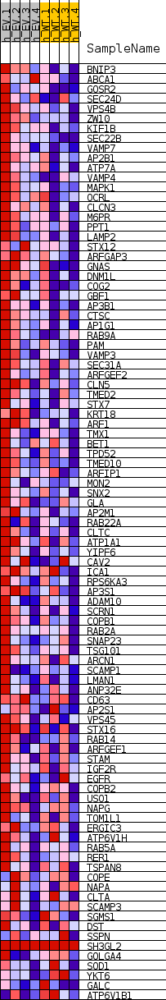
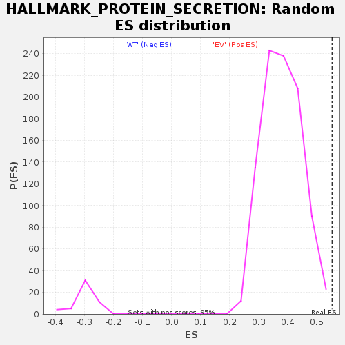

| | | Dataset | EV_WT_express.EV_WT.cls#EV_versus_WT |
| Phenotype | EV_WT.cls#EV_versus_WT |
| Upregulated in class | EV |
| GeneSet | HALLMARK_PROTEIN_SECRETION |
| Enrichment Score (ES) | 0.5524461 |
| Normalized Enrichment Score (NES) | 1.4529938 |
| Nominal p-value | 0.0010537407 |
| FDR q-value | 0.03608564 |
| FWER p-Value | 0.152 |
Table: GSEA Results Summary
 Fig 1: Enrichment plot: HALLMARK_PROTEIN_SECRETION
Fig 1: Enrichment plot: HALLMARK_PROTEIN_SECRETION
Profile of the Running ES Score & Positions of GeneSet Members on the Rank Ordered List
| SYMBOL | TITLE | RANK IN GENE LIST | RANK METRIC SCORE | RUNNING ES | CORE ENRICHMENT | | 1 | BNIP3 | NNN | 2937 | 0.623 | -0.0183 | Yes |
| 2 | ABCA1 | NNN | 3237 | 0.600 | 0.0072 | Yes |
| 3 | GOSR2 | NNN | 4916 | 0.478 | 0.0030 | Yes |
| 4 | SEC24D | NNN | 5739 | 0.443 | 0.0116 | Yes |
| 5 | VPS4B | NNN | 7679 | 0.400 | -0.0010 | Yes |
| 6 | ZW10 | NNN | 7759 | 0.396 | 0.0178 | Yes |
| 7 | KIF1B | NNN | 8181 | 0.379 | 0.0300 | Yes |
| 8 | SEC22B | NNN | 8384 | 0.370 | 0.0454 | Yes |
| 9 | VAMP7 | NNN | 8444 | 0.367 | 0.0631 | Yes |
| 10 | AP2B1 | NNN | 8466 | 0.367 | 0.0814 | Yes |
| 11 | ATP7A | NNN | 8504 | 0.365 | 0.0994 | Yes |
| 12 | VAMP4 | NNN | 8510 | 0.365 | 0.1179 | Yes |
| 13 | MAPK1 | NNN | 10447 | 0.356 | 0.1031 | Yes |
| 14 | OCRL | NNN | 11006 | 0.342 | 0.1110 | Yes |
| 15 | CLCN3 | NNN | 11155 | 0.336 | 0.1257 | Yes |
| 16 | M6PR | NNN | 11562 | 0.324 | 0.1353 | Yes |
| 17 | PPT1 | NNN | 11737 | 0.318 | 0.1485 | Yes |
| 18 | LAMP2 | NNN | 11758 | 0.317 | 0.1644 | Yes |
| 19 | STX12 | NNN | 11996 | 0.310 | 0.1761 | Yes |
| 20 | ARFGAP3 | NNN | 12236 | 0.304 | 0.1875 | Yes |
| 21 | GNAS | NNN | 12319 | 0.301 | 0.2015 | Yes |
| 22 | DNM1L | NNN | 12430 | 0.300 | 0.2149 | Yes |
| 23 | COG2 | NNN | 12587 | 0.295 | 0.2273 | Yes |
| 24 | GBF1 | NNN | 12688 | 0.293 | 0.2405 | Yes |
| 25 | AP3B1 | NNN | 12714 | 0.292 | 0.2550 | Yes |
| 26 | CTSC | NNN | 13271 | 0.276 | 0.2596 | Yes |
| 27 | AP1G1 | NNN | 13304 | 0.275 | 0.2731 | Yes |
| 28 | RAB9A | NNN | 13929 | 0.259 | 0.2757 | Yes |
| 29 | PAM | NNN | 14119 | 0.254 | 0.2854 | Yes |
| 30 | VAMP3 | NNN | 14145 | 0.253 | 0.2979 | Yes |
| 31 | SEC31A | NNN | 14517 | 0.247 | 0.3042 | Yes |
| 32 | ARFGEF2 | NNN | 14558 | 0.247 | 0.3161 | Yes |
| 33 | CLN5 | NNN | 14636 | 0.244 | 0.3272 | Yes |
| 34 | TMED2 | NNN | 14637 | 0.244 | 0.3396 | Yes |
| 35 | STX7 | NNN | 14639 | 0.244 | 0.3520 | Yes |
| 36 | KRT18 | NNN | 15604 | 0.226 | 0.3471 | Yes |
| 37 | ARF1 | NNN | 15812 | 0.221 | 0.3548 | Yes |
| 38 | TMX1 | NNN | 16011 | 0.216 | 0.3625 | Yes |
| 39 | BET1 | NNN | 16021 | 0.216 | 0.3733 | Yes |
| 40 | TPD52 | NNN | 16024 | 0.216 | 0.3842 | Yes |
| 41 | TMED10 | NNN | 16471 | 0.207 | 0.3872 | Yes |
| 42 | ARFIP1 | NNN | 16489 | 0.206 | 0.3974 | Yes |
| 43 | MON2 | NNN | 16691 | 0.202 | 0.4043 | Yes |
| 44 | SNX2 | NNN | 16748 | 0.200 | 0.4136 | Yes |
| 45 | GLA | NNN | 16952 | 0.196 | 0.4201 | Yes |
| 46 | AP2M1 | NNN | 17047 | 0.193 | 0.4283 | Yes |
| 47 | RAB22A | NNN | 17094 | 0.192 | 0.4373 | Yes |
| 48 | CLTC | NNN | 17124 | 0.192 | 0.4466 | Yes |
| 49 | ATP1A1 | NNN | 17300 | 0.188 | 0.4532 | Yes |
| 50 | YIPF6 | NNN | 17371 | 0.186 | 0.4615 | Yes |
| 51 | CAV2 | NNN | 17490 | 0.183 | 0.4688 | Yes |
| 52 | ICA1 | NNN | 17759 | 0.176 | 0.4732 | Yes |
| 53 | RPS6KA3 | NNN | 17976 | 0.171 | 0.4782 | Yes |
| 54 | AP3S1 | NNN | 18015 | 0.170 | 0.4863 | Yes |
| 55 | ADAM10 | NNN | 18426 | 0.167 | 0.4878 | Yes |
| 56 | SCRN1 | NNN | 18474 | 0.165 | 0.4954 | Yes |
| 57 | COPB1 | NNN | 18505 | 0.165 | 0.5033 | Yes |
| 58 | RAB2A | NNN | 18559 | 0.164 | 0.5107 | Yes |
| 59 | SNAP23 | NNN | 18958 | 0.156 | 0.5119 | Yes |
| 60 | TSG101 | NNN | 19034 | 0.154 | 0.5185 | Yes |
| 61 | ARCN1 | NNN | 19099 | 0.153 | 0.5251 | Yes |
| 62 | SCAMP1 | NNN | 19301 | 0.148 | 0.5293 | Yes |
| 63 | LMAN1 | NNN | 19567 | 0.143 | 0.5320 | Yes |
| 64 | ANP32E | NNN | 20025 | 0.132 | 0.5310 | Yes |
| 65 | CD63 | NNN | 20456 | 0.124 | 0.5300 | Yes |
| 66 | AP2S1 | NNN | 20664 | 0.120 | 0.5325 | Yes |
| 67 | VPS45 | NNN | 20822 | 0.116 | 0.5358 | Yes |
| 68 | STX16 | NNN | 20984 | 0.111 | 0.5387 | Yes |
| 69 | RAB14 | NNN | 21243 | 0.106 | 0.5397 | Yes |
| 70 | ARFGEF1 | NNN | 21366 | 0.104 | 0.5429 | Yes |
| 71 | STAM | NNN | 21976 | 0.089 | 0.5371 | Yes |
| 72 | IGF2R | NNN | 22019 | 0.088 | 0.5409 | Yes |
| 73 | EGFR | NNN | 22298 | 0.083 | 0.5404 | Yes |
| 74 | COPB2 | NNN | 22311 | 0.082 | 0.5444 | Yes |
| 75 | USO1 | NNN | 22380 | 0.080 | 0.5473 | Yes |
| 76 | NAPG | NNN | 22554 | 0.076 | 0.5482 | Yes |
| 77 | TOM1L1 | NNN | 22647 | 0.074 | 0.5504 | Yes |
| 78 | ERGIC3 | NNN | 22740 | 0.071 | 0.5524 | Yes |
| 79 | ATP6V1H | NNN | 22942 | 0.066 | 0.5524 | No |
| 80 | RAB5A | NNN | 23307 | 0.056 | 0.5490 | No |
| 81 | RER1 | NNN | 23320 | 0.055 | 0.5517 | No |
| 82 | TSPAN8 | NNN | 23604 | 0.048 | 0.5493 | No |
| 83 | COPE | NNN | 23624 | 0.047 | 0.5513 | No |
| 84 | NAPA | NNN | 23842 | 0.041 | 0.5497 | No |
| 85 | CLTA | NNN | 24349 | 0.024 | 0.5423 | No |
| 86 | SCAMP3 | NNN | 24424 | 0.021 | 0.5422 | No |
| 87 | SGMS1 | NNN | 24452 | 0.020 | 0.5427 | No |
| 88 | DST | NNN | 24784 | 0.003 | 0.5372 | No |
| 89 | SSPN | NNN | 30998 | 0.000 | 0.4315 | No |
| 90 | SH3GL2 | NNN | 44434 | 0.000 | 0.2027 | No |
| 91 | GOLGA4 | NNN | 48936 | -0.073 | 0.1298 | No |
| 92 | SOD1 | NNN | 49745 | -0.106 | 0.1215 | No |
| 93 | YKT6 | NNN | 50541 | -0.141 | 0.1151 | No |
| 94 | GALC | NNN | 52416 | -0.236 | 0.0952 | No |
| 95 | ATP6V1B1 | NNN | 52998 | -0.274 | 0.0993 | No |
Table: GSEA details [plain text format]

Fig 2: HALLMARK_PROTEIN_SECRETION
Blue-Pink O' Gram in the Space of the Analyzed GeneSet

Fig 3: HALLMARK_PROTEIN_SECRETION: Random ES distribution
Gene set null distribution of ES for HALLMARK_PROTEIN_SECRETION